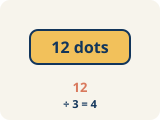
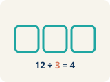
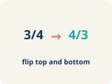
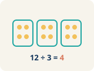

Unit 2 · Standard 6.NS.1
Divide Fractions
Key Vocabulary Level 1 support
Picture first, then the word, then a plain-language meaning. Say each word out loud.

In 3/4 ÷ 1/2, the dividend is 3/4 — the total amount being split
Dividend
The number you are splitting up in a division problem.

In 3/4 ÷ 1/2, the divisor is 1/2 — the size of each group
Divisor
The number you split by in a division problem.

The reciprocal of 2/3 is 3/2. To divide by 2/3, multiply by 3/2.
Reciprocal
A fraction turned upside down.

In 3/4 ÷ 1/4 = 3, the quotient is 3 — three 1/4-size pieces fit into 3/4
Quotient
The answer when you divide.

8/12 → GCF is 4 → 8÷4 / 12÷4 = 2/3
Simplify
To make a fraction smaller using the same parts, like 2/4 = 1/2.
Key Ideas & Notes
What we're learning today
I can divide a fraction by a fraction by multiplying by the reciprocal and simplifying.
Notice
Agent Rivera is dividing a 3/4-pound evidence bag into portions that each weigh 1/8 pound.
Key idea
I can divide a fraction by a fraction by multiplying by the reciprocal and simplifying.
Words I'll use
🤔 Think About It
- What is the total weight being divided?
- What is the size of each portion?
- Will the answer be more or less than 1?
See the notes in action: watch one worked all the way through, then try the next with the same steps.
Follow each step as your teacher solves it.
Problem: What is the reciprocal of 3/5?
- 5/3
- 3/5
- 5/5
- 1/3
- Step 1 To find the reciprocal, flip the fraction.
- Step 2 The reciprocal of 3/5 is 5/3.
✅ Answer: A. 5/3
Solve this one with your class using the same steps.
Problem: What is 1/2 ÷ 1/4?
- 2
- 1/8
- 4
- 1/2
- Step 1
- Step 2
Answer:
Now try one on your own. Show every step.
Problem: What is 3/4 ÷ 1/8?
- 6
- 3/32
- 8/3
- 24
Turn & Talk — Discussion Points Level 1 support Level 2
Talk with a partner about each prompt. If you need help getting started, use the Level 1 sentence stems. Ready for more? Try the Level 2 question.
Agent Rivera splits a 3/4-pound evidence bag into 1/8-pound portions. Will she get more or fewer than 1 portion? Estimate before solving.
Start here: She will get many portions because 1/8 pound is much smaller than 3/4 pound.
💡 Need a hint?
Try starting with the word "dividend" or "divisor". Re-read the question and underline what it is asking you to compare or find. Use one number or word from the problem as your evidence.
Sentence starters (optional)
She will get ___ than 1 portion because ___.Ella obtendrá ___ que 1 porción porque ___.
Since 3/4 is the dividend and 1/8 is the divisor, ___.Como 3/4 es el dividendo y 1/8 es el divisor, ___.
Listen for: Students recognize the divisor 1/8 is smaller than the dividend 3/4, so the quotient is greater than 1.
Estimate the exact number of portions and explain your reasoning using equivalent fractions before computing.
- I estimate about ___ portions because 3/4 equals ___ eighths.
- Comparing eighths to eighths shows ___.
Why do we multiply by the reciprocal when we divide one fraction by another?
Start here: Multiplying by the reciprocal undoes the divisor and gives the same result as dividing.
💡 Need a hint?
Try starting with the word "reciprocal" or "divisor". Re-read the question and underline what it is asking you to compare or find. Use one number or word from the problem as your evidence.
Sentence starters (optional)
I flipped the divisor to its reciprocal because ___.Volteé el divisor a su recíproco porque ___.
After Keep, Change, Flip the answer is ___.Después de Mantener, Cambiar, Voltear la respuesta es ___.
Listen for: Students explain that flipping the divisor turns division into multiplication, and they simplify the final quotient.
Show why 3/4 ÷ 1/8 gives the same answer whether you count eighths in 3/4 or multiply by the reciprocal.
- Both methods agree because ___.
- Counting eighths matches multiplying by 8 because ___.
How could dividing fractions help you share food or materials fairly?
Start here: Dividing fractions tells you how many equal fraction-size shares fit into an amount.
💡 Need a hint?
Try starting with the word "dividend" or "divisor". Re-read the question and underline what it is asking you to compare or find. Use one number or word from the problem as your evidence.
Sentence starters (optional)
Dividing fractions helps when ___.Dividir fracciones ayuda cuando ___.
For example, ___ of a ___ split into ___ shares gives ___.Por ejemplo, ___ de un ___ dividido en ___ partes da ___.
Listen for: Students give a fair-share scenario and identify which fraction is the dividend and which is the divisor.
A classmate flipped the dividend instead of the divisor. Critique this error and explain the correct step.
- Flipping the dividend is wrong because ___.
- Only the ___ should be flipped because ___.
Interactive Unit Projects
Apply your math skills in these interactive dashboard games and coding labs.
Unit 2 Project — Fraction Division in Action
Apply dividing fractions to a real-world capstone challenge for Unit 2.
Fraction Division Soccer
Play through fraction-division challenges with whole numbers and fractions (6.NS.1).
Fraction Kitchen
Use fraction division to scale recipes and solve kitchen problems (6.NS.1).
Master Chef Kitchen — Recipe Rescue (Part 1)
Interactive graphic novel: dividing fractions by fractions to rescue the recipe (6.NS.1).
Write About the Math The Writing Revolution
I can explain my steps using the words dividend, divisor, reciprocal, quotient, and simplify.
1. Kernel Sentence subject + verb
Model: Simplify is to make a fraction smaller using the same parts, like 2/4 = 1/2.Simplificar es hacer una fracción más pequeña con las mismas partes, como 2/4 = 1/2.
Write a kernel sentence about simplify. Use a subject and a verb.Escribe una oración base sobre simplificar. Usa un sujeto y un verbo.
2. Sentence Expansion because · but · so
Kernel: Simplify matters in mathSimplificar importa en matemáticas
Expand the kernel three ways. Add a reason, a contrast, and a result.
Simplify matters in math because ___.Simplificar importa en matemáticas porque ___.
Simplify matters in math, but ___.Simplificar importa en matemáticas, pero ___.
Simplify matters in math, so ___.Simplificar importa en matemáticas, entonces ___.
3. Sentence Types 4 ways to write a math idea
Tell one true fact about simplify.Di un hecho verdadero sobre simplify.
Simplify ___.
Ask a question about simplify.Haz una pregunta sobre simplify.
How does ___ ?¿Cómo ___ ?
Show excitement about simplify.Muestra entusiasmo sobre simplify.
Wow, ___ !¡Guau, ___ !
Tell a partner what to do with simplify.Dile a un compañero qué hacer con simplify.
First, ___ .Primero, ___ .
4. Explain Your Reasoning use a sentence starter
She will get ___ than 1 portion because ___.Ella obtendrá ___ que 1 porción porque ___.
Since 3/4 is the dividend and 1/8 is the divisor, ___.Como 3/4 es el dividendo y 1/8 es el divisor, ___.
I flipped the divisor to its reciprocal because ___.Volteé el divisor a su recíproco porque ___.
Try It
Solve on your own. Check the answer key when you are done.
1. What is (5/6) ÷ (5/12)?
- 2
- 1/2
- 25/72
- 12/5
2. What is (7/8) ÷ (1/4)?
- 7/2
- 7/32
- 1/2
- 4/7
Stretch Your Thinking Level 2 enrichment
Challenge task — explain your reasoning in full sentences.
Is 3/4 ÷ 1/2 the same as 1/2 ÷ 3/4? Solve both and explain why or why not. What does this tell you about the order in division?
Sentence starter: 3/4 ÷ 1/2 = ___ and 1/2 ÷ 3/4 = ___. These are ___ because ___. This shows that division is ___.
Reflect — Exit Ticket
What is 4/5 ÷ 2/5?
- 2
- 8/25
- 2/5
- 10/5
Answer Key & Teacher Guide
- We Try (notes): A. 2 — 1/2 ÷ 1/4 = 1/2 × 4/1 = 4/2 = 2. Two 1/4-size pieces fit into 1/2.
- You Try (notes): A. 6 — 3/4 ÷ 1/8 = 3/4 × 8/1 = 24/4 = 6. Six 1/8-size pieces fit into 3/4.
- Try It 1: A. 2 — (5/6) × (12/5) = 60/30 = 2.
- Try It 2: A. 7/2 — (7/8) × (4/1) = 28/8 = 7/2.
- Exit Ticket: A. 2 — 4/5 ÷ 2/5 = 4/5 × 5/2 = 20/10 = 2. Two groups of 2/5 fit into 4/5.
Writing (TWR) — what to look for
- Kernel sentence: A complete sentence needs a subject and a verb. Example: Simplify is to make a fraction smaller using the same parts, like 2/4 = 1/2.
- Expansion: because gives a reason, but shows a contrast or exception, so shows a result. Answers vary; each must keep the kernel idea and add the correct kind of detail.
- Sentence types: Statement ends with a period, question with "?", exclamation with "!", and a command starts with an action verb (a "bossy" verb).